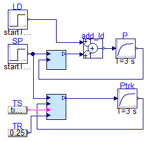
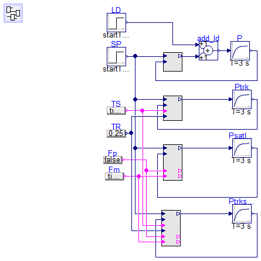
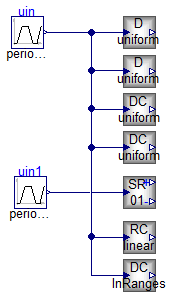
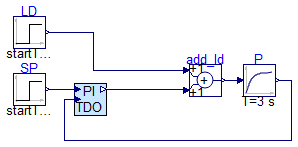
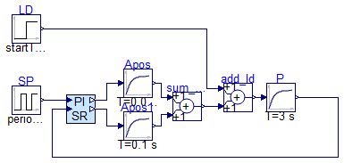
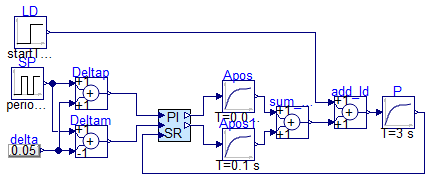

Package Content

Modelica definition
model Test_AWPI_analogue
Blocks.Analogue.AWPI_1dof PI(CSmin = 0, CSstart = 0.2, Ti = 2, K = 3, CSmax = 2);
Modelica.Blocks.Continuous.FirstOrder P(k = 1, T = 3, initType = Modelica.Blocks.Types.Init.InitialOutput);
Modelica.Blocks.Math.Add add_ld;
Modelica.Blocks.Sources.Step SP(startTime = 1);
Modelica.Blocks.Sources.Step LD(height = 0.5, startTime = 10);
Blocks.Analogue.AWPI_1dof_trk PItrk(CSmin = 0, CSstart = 0.2, Ti = 2, K = 3, CSmax = 2);
Modelica.Blocks.Continuous.FirstOrder Ptrk(k = 1, T = 3, initType = Modelica.Blocks.Types.Init.InitialOutput);
Modelica.Blocks.Sources.BooleanExpression TS(y = time > 3
and time < 5);
Modelica.Blocks.Sources.RealExpression TR(y = 0.25);
equation
connect(PI.CS, add_ld.u2);
connect(add_ld.y, P.u);
connect(P.y, PI.PV);
connect(SP.y, PI.SP);
connect(LD.y, add_ld.u1);
connect(PItrk.SP, PI.SP);
connect(PItrk.CS, Ptrk.u);
connect(Ptrk.y, PItrk.PV);
connect(TS.y, PItrk.TS);
connect(TR.y, PItrk.TR);
end Test_AWPI_analogue;

Information
Extends from Templates.BaseClasses.DigitalControlDiagram.
Modelica definition
model Test_AWPI_digital
extends Templates.BaseClasses.DigitalControlDiagram;
Blocks.Digital.AWPI_1dof PI(CSmin = 0, CSstart = 0.2, Ti = 2, K = 3, CSmax = 2);
Modelica.Blocks.Continuous.FirstOrder P(k = 1, T = 3, initType = Modelica.Blocks.Types.Init.InitialOutput);
Modelica.Blocks.Math.Add add_ld;
Modelica.Blocks.Sources.Step SP(startTime = 1);
Modelica.Blocks.Sources.Step LD(height = 0.5, startTime = 10);
Blocks.Digital.AWPI_1dof_trk PItrk(CSmin = 0, CSstart = 0.2, Ti = 2, K = 3, CSmax = 2);
Modelica.Blocks.Continuous.FirstOrder Ptrk(k = 1, T = 3, initType = Modelica.Blocks.Types.Init.InitialOutput);
Modelica.Blocks.Sources.BooleanExpression TS(y = time > 3
and time < 5);
Modelica.Blocks.Sources.RealExpression TR(y = 0.25);
Modelica.Blocks.Continuous.FirstOrder Psatlock(k = 1, T = 3, initType = Modelica.Blocks.Types.Init.InitialOutput);
Blocks.Digital.AWPI_1dof_sat_lock PIsatlock(CSmin = 0, CSstart = 0.2, Ti = 2, K = 3, CSmax = 2);
Modelica.Blocks.Sources.BooleanExpression Fp(y = false);
Modelica.Blocks.Sources.BooleanExpression Fm(y = time > 2.5
and time < 3.5);
Blocks.Digital.AWPI_1dof_trk_sat_lock PItrksatlock(CSmin = 0, CSstart = 0.2, Ti = 2, K = 3, CSmax = 2);
Modelica.Blocks.Continuous.FirstOrder Ptrksatlock(k = 1, T = 3, initType = Modelica.Blocks.Types.Init.InitialOutput);
equation
connect(PI.CS, add_ld.u2);
connect(add_ld.y, P.u);
connect(P.y, PI.PV);
connect(SP.y, PI.SP);
connect(LD.y, add_ld.u1);
connect(PItrk.SP, PI.SP);
connect(PItrk.CS, Ptrk.u);
connect(Ptrk.y, PItrk.PV);
connect(TS.y, PItrk.TS);
connect(TR.y, PItrk.TR);
connect(PIsatlock.CS, Psatlock.u);
connect(Psatlock.y, PIsatlock.PV);
connect(PIsatlock.SP, PI.SP);
connect(Fp.y, PIsatlock.Fp);
connect(Fm.y, PIsatlock.Fm);
connect(PItrksatlock.SP, PI.SP);
connect(PItrksatlock.TS, PItrk.TS);
connect(PItrksatlock.TR, PItrk.TR);
connect(PItrksatlock.Fp, PIsatlock.Fp);
connect(PItrksatlock.Fm, PIsatlock.Fm);
connect(PItrksatlock.CS, Ptrksatlock.u);
connect(Ptrksatlock.y, PItrksatlock.PV);
end Test_AWPI_digital;

Modelica definition
model Test_Act
Actuation.Distributor_uniform D2(ns = 2);
Actuation.Distributor_uniform D5(ns = 5);
Modelica.Blocks.Sources.Trapezoid uin(amplitude = 1, rising = 1, width = 1, falling = 1, period = 4);
Actuation.DaisyChain_uniform DC2(ns = 2);
Actuation.DaisyChain_uniform DC5(ns = 5);
Modelica.Blocks.Sources.Trapezoid uin1(rising = 1, width = 1, falling = 1, period = 4, amplitude = 3, offset = -1.5);
Actuation.SplitRange_01 SR;
Actuation.RangeConv_Linear RC(CSimin = 0.4, CSimax = 0.6);
Actuation.DaisyChain_InRanges_Out01 DC_IR(CSiRB = {0.1, 0.3, 0.4, 0.75, 0.9});
equation
connect(uin.y, D2.CSi01);
connect(uin.y, D5.CSi01);
connect(DC2.CSi01, D5.CSi01);
connect(DC5.CSi01, D5.CSi01);
connect(uin1.y, SR.CSi01);
connect(RC.CSi, D5.CSi01);
connect(DC_IR.CSi, D5.CSi01);
end Test_Act;

Modelica definition
model Test_AWPI_TDO_analogue
AggregateBlocks.Analogue.PI_TDO PI(CSmin = 0, Ti = 2, K = 3, CSmax = 2, CSstart = 0.2, Ttdo = 0.25);
Modelica.Blocks.Continuous.FirstOrder P(k = 1, T = 3, initType = Modelica.Blocks.Types.Init.InitialOutput);
Modelica.Blocks.Math.Add add_ld;
Modelica.Blocks.Sources.Step SP(startTime = 1);
Modelica.Blocks.Sources.Step LD(height = 0.5, startTime = 10);
equation
connect(add_ld.y, P.u);
connect(P.y, PI.PV);
connect(SP.y, PI.SP);
connect(LD.y, add_ld.u1);
connect(PI.CS, add_ld.u2);
end Test_AWPI_TDO_analogue;

Modelica definition
model Test_AWPI_SR_analogue
AggregateBlocks.Analogue.PI_SplitRange PI(Ti = 2, K = 3, CSstart = 0.2, CSposmax = 100, CSnegmax = 20);
Modelica.Blocks.Continuous.FirstOrder P(k = 1, T = 3, initType = Modelica.Blocks.Types.Init.InitialOutput);
Modelica.Blocks.Math.Add add_ld;
Modelica.Blocks.Sources.Pulse SP(startTime = 1, amplitude = 1, period = 10, offset = -0.5);
Modelica.Blocks.Sources.Step LD(height = 0.5, startTime = 10);
Modelica.Blocks.Continuous.FirstOrder Apos(k = 1, initType = Modelica.Blocks.Types.Init.InitialOutput, T = 0.05);
Modelica.Blocks.Math.Add sum_act;
Modelica.Blocks.Continuous.FirstOrder Apos1(initType = Modelica.Blocks.Types.Init.InitialOutput, k = -1, T = 0.1);
equation
connect(add_ld.y, P.u);
connect(P.y, PI.PV);
connect(SP.y, PI.SP);
connect(LD.y, add_ld.u1);
connect(PI.CSpos, Apos.u);
connect(PI.CSneg, Apos1.u);
connect(Apos.y, sum_act.u1);
connect(Apos1.y, sum_act.u2);
connect(sum_act.y, add_ld.u2);
end Test_AWPI_SR_analogue;

Modelica definition
model Test_TwinPI_RangeSP
AggregateBlocks.Analogue.TwinPI_RangeSP PI(CSstart = 0.2, CSposmax = 100, CSnegmax = 20, Khi = 3, Tihi = 2, Klo = 3, Tilo = 2);
Modelica.Blocks.Continuous.FirstOrder P(k = 1, T = 3, initType = Modelica.Blocks.Types.Init.InitialOutput);
Modelica.Blocks.Math.Add add_ld;
Modelica.Blocks.Sources.Pulse SP(startTime = 1, amplitude = 1, period = 10, offset = -0.5);
Modelica.Blocks.Sources.Step LD(height = 0.5, startTime = 10);
Modelica.Blocks.Continuous.FirstOrder Apos(k = 1, initType = Modelica.Blocks.Types.Init.InitialOutput, T = 0.05);
Modelica.Blocks.Math.Add sum_act;
Modelica.Blocks.Continuous.FirstOrder Apos1(initType = Modelica.Blocks.Types.Init.InitialOutput, k = -1, T = 0.1);
Modelica.Blocks.Math.Add Deltap;
Modelica.Blocks.Math.Add Deltam(k2 = -1);
Modelica.Blocks.Sources.RealExpression delta(y = 0.05);
equation
connect(add_ld.y, P.u);
connect(P.y, PI.PV);
connect(LD.y, add_ld.u1);
connect(PI.CSpos, Apos.u);
connect(PI.CSneg, Apos1.u);
connect(Apos.y, sum_act.u1);
connect(Apos1.y, sum_act.u2);
connect(sum_act.y, add_ld.u2);
connect(SP.y, Deltap.u1);
connect(SP.y, Deltam.u1);
connect(delta.y, Deltam.u2);
connect(delta.y, Deltap.u2);
connect(Deltap.y, PI.SPhi);
connect(Deltam.y, PI.SPlo);
end Test_TwinPI_RangeSP;
Automatically generated Mon Jun 1 16:09:57 2020.